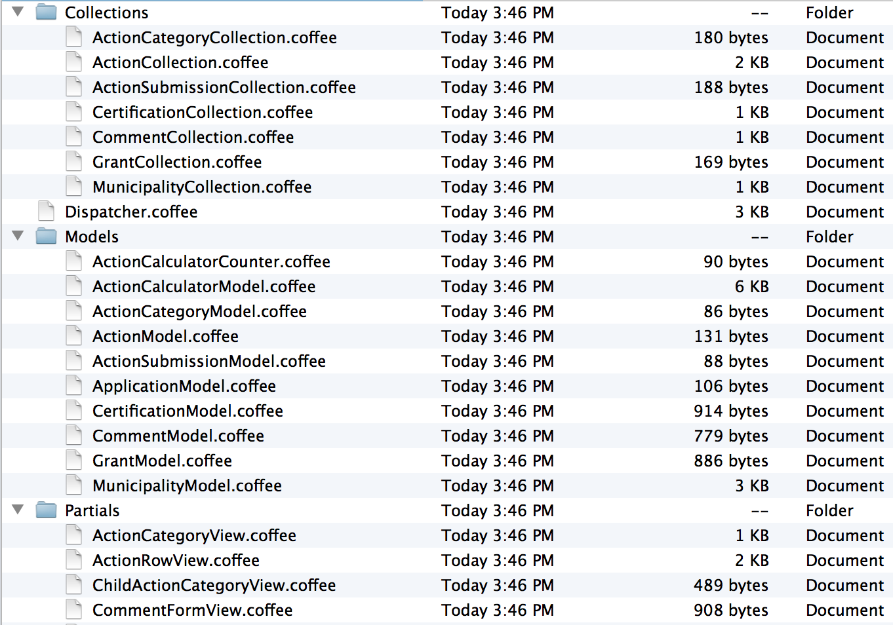

Welcome
Developing Extensions with Backbone.js, Require.js, and Extbase
Created by Zach Davis / @zdavis
Who am I?
- Zach Davis
- Education background (Taught college, English Ph.D.)
- Switched careers about 10 years ago
- Founding partner and developer at Cast Iron Coding
- Spouse, daughter, dog and I live in sunny Portland, OR
Overview
- Why I think javascript frameworks also make sense on more traditional TYPO3 sites
- Require.js for managing JS dependencies on TYPO3 projects
- A whirlwind tour of Backbone.js as a low-level JS framework
- A look at how we got Extbase to talk to Backbone
(this is where it's gonna get a little ugly)
Handling Javascript Resources in TYPO3 is kinda imperfect
Two main ways to include Javascript
- Include it in the HTML template
- Include it via typoscript
Typoscript JS Inclusion
cObj style
lib.redesign_footerSocialNav {
wrap = <nav class="social">|</nav>
10 = TEXT
100 {
value (
<div class="addthis_toolbox addthis_default_style">
<a class="addthis_button_facebook">Facebook</a>
<a class="addthis_button_twitter">Twitter</a>
<a class="addthis_button_linkedin">Linkedin</a>
</div>
<script type="text/javascript"
src="http://s7.addthis.com/js/250/addthis_widget.js">
</script>
)
}
}
Typoscript JS Inclusion
cObj style take 2
headerData {
10 = TEXT
10.value (
<script type="text/javascript"
src="http://use.typekit.com/vnw6eob.js"></script>
)
} Typoscript JS Inclusion
header style
# Include modernizr in the header. All other JS is included in the footer.
includeJS {
10 = EXT:t3site/Javascript/Libs/modernizr-1.7.min.js
30 = EXT:t3site/Javascript/Libs/chosen.jquery.min.js
}
includeJSLib {
10 = https://ajax.googleapis.com/ajax/libs/jquery/1.7.1/jquery.js
10.external = 1
}
includeJSFooter {
20 = EXT:t3site/Sites/Main/Resources/Public/Javascript/Usr/plugins.js
30 = EXT:t3site/Sites/Main/Resources/Public/Javascript/Usr/script.js
}
Too many options
==
a poverty of riches
- PAGE.javascriptLibs
- PAGE.includeJSlibs[]
- PAGE.includeJSFooterlibs[]
- PAGE.includeJS[]
- PAGE.includeJSFooter[]
- PAGE.jsInline
- PAGE.jsFooterInline
- PAGE.inlineJS
So many places for things to go wrong
- All these possibilities make it hard to find where JS is being included
- JS should be managed in JS, not in TS
- Over time, JS dependencies degrade and get messy
- Extensions include javascript too, which often breaks things
- Difficult to create a working asset pipeline out of this
- Really, really slows down JS development to have to include every file
If you use a JS framework, you'll have lots of files...
...and you really don't want to manage them manually in Typoscript.
Require.js to the rescue!
"RequireJS is a JavaScript file and module loader. It is optimized for in-browser use, but it can be used in other JavaScript environments, like Rhino and Node. Using a modular script loader like RequireJS will improve the speed and quality of your code."
(And it supports IE6, Firefox 2+, Safari 3.2+, Chrome 3+, Opera 10+)
Some warnings
- Require.js requires that you take care in what javascript is included and how it's included
- If you want to download any TYPO3 extension and have it "just work", this probably isn't for you
- In many cases you'll have to tweak your jQuery plugins to make them work
With require.js, we include the require.js library and reference our javascript manifest*
<script
data-main="typo3conf/ext/t3site/Javascript/Source/Main.js"
src="typo3conf/ext/t3site/Sites/Javascript/Source/Libs/require.js"
></script>
Main.js
require.config({
// We put AMD wrappers around non AMD libraries so
// that we can pass them to modules as dependencies
shim: {
'underscore': {
exports: '_'
},
'backbone': {
deps: ['underscore', 'jquery'],
exports: 'Backbone'
}
},
paths: {
'backbone': 'Libs/Backbone/backbone',
'underscore': 'Libs/Underscore/underscore',
'jquery': 'Libs/JQuery/jquery'
}
});
require(
[
// Triggered by markup, not by a script, so we load it explicitly
'Libs/Bootstrap/bootstrap-modal',
'Libs/Bootstrap/bootstrap-collapse',
// Then load the good stuff
'Site/Templates',
'Ext/Cicevents/EventsApp',
'Ext/Cicregister/Cicregister',
'Ext/Sjcert/SjApp'
]
);
Wrap all JS in define()
define({
color: "black",
size: "unisize"
});
Pass in dependencies
define(["./cart", "./inventory"], function(cart, inventory) {
return {
color: "blue",
size: "large",
addToCart: function() {
inventory.decrement(this);
cart.add(this);
}
}
});
What it looks like in practice (switching to coffescript)
define(['backbone', 'jquery', 'underscore'], (Backbone, $, _) ->
class MyModelView extends Backbone.View
initialize: ->
@.template = $("#template-myModelView").html()
render: ->
$(@.el).html(_.template(@.template, {
action: @.model
}))
)
Require.js loads dependencies asynchronously

In production, we use optimized javascript
- Require.js combines all scripts into one and minifies them via UglifyJS
- In production, we have a environment = PROD constant that loads the optimized JS
- Production and dev both have a single line of typoscript for all JS includes
Require.js Benefits
- Easily break up your javascript project into multiple files
- Define dependencies in each file
- Allows for simple dependency injection
- Optimization done via CLI (using node), easy to integrate into build process
- Centralized manifest instead of spread out typoscript includes
Backbone!
"Backbone.js gives structure to web applications by providing models with key-value binding and custom events, collections with a rich API of enumerable functions, views with declarative event handling, and connects it all to your existing API over a RESTful JSON interface."
And Underscore!
"Underscore is a utility-belt library for JavaScript that provides a lot of the functional programming support that you would expect in Prototype.js (or Ruby), but without extending any of the built-in JavaScript objects. It's the tie to go along with jQuery's tux, and Backbone.js's suspenders."
Backbone is a frontend MVC framework
- Backbone TEMPLATES are like fluid views (but simpler)
- Backbone VIEWS are what we tend to think as controllers (but not quite)
- Backbone MODELS tend to be pretty flat data models (unlike, say, Rails models)
- Backbone COLLECTIONS are a lot like repositories in ExtBase
- Backbone ROUTES are like routes.rb in Rails (no real equivalent in T3-land)